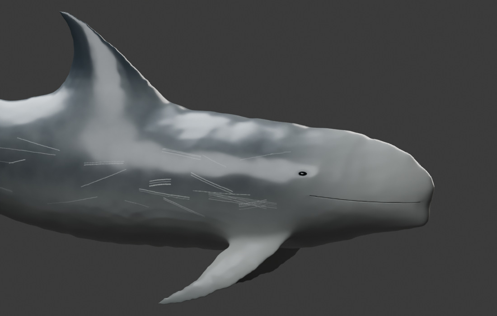
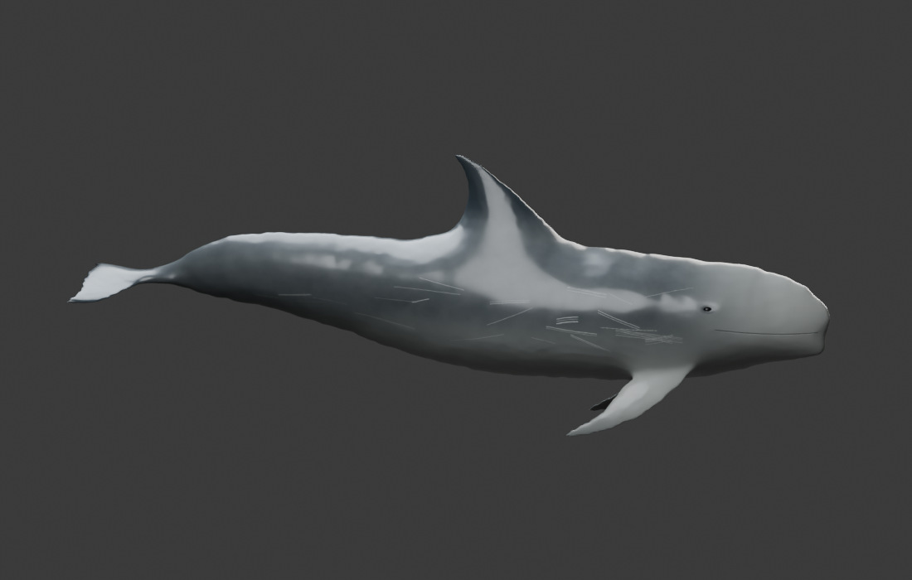
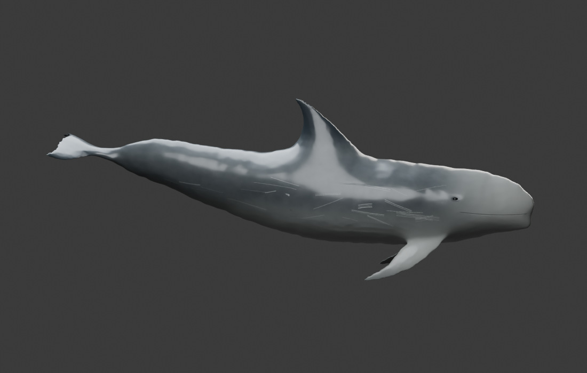

← Open the Risso studyPHENOVOXEL ARCHIVE / FREE ASSET WORKFLOW / 5 NOVEMBER 2026
Original appearance.
Editable behavior.
Risso’s dolphin now opens with Major’s original hosted artwork. A separately credited, freely editable Blender reconstruction supplies the behavior study. Each view identifies its source.
APPEARANCE · MAJORThe requested original
The official Sketchfab viewer preserves the creator’s model and materials. Rotate and zoom where the device supports the viewer. An original-page link remains available if the embed cannot render.
View Major’s original ↗Hosted artwork only. The editable reconstruction and its motions do not contain or animate Major’s geometry.
BEHAVIOR · EDITABLE RECONSTRUCTIONA free Blender project
Ivan Geraldo’s CC BY 4.0 source body has a faired shell, small recessed eyes, integrated closed skin grooves and independently authored smooth pigment and roughness. It retains a native editable axial rig.
Original editable source · ivan.geraldo ↗Appearance and movement remain authored and unvalidated. The portable model is supplied separately from the original artist viewer.
The earlier nine-species skin batch did not meet the requested visual standard. This release changes Risso’s presentation and revises its separate editable study. It does not claim that the other eight species are now photorealistic.
Editable files
The Blender file contains packed textures, source notes and a four-bone authored study. Frame 1 is neutral. The browser GLB uses the archive’s separate deformation controller.
Actual Blender views

Editable behavior reconstruction in Blender: recessed corneal surfaces, narrow closed oral grooves and smooth skin. Source body: ivan.geraldo, CC BY 4.0; modifications described above. This is a model rendering.
Neutral source-derived body. Proportions and optical values describe an illustrative individual.
One authored axial study pose. The native project retains the rig; this is not a measured swimming trajectory.Biological references and limits
Closed mouths do not simulate prey capture or internal oral mechanics. Timing, fluid forces, metabolism and tissue optics are not measured. The appearance reference is also artist work. Visual quality requires human assessment; software tests cannot establish photorealism. The other 340 records, reference photographs, occurrence decisions and deposited DNA sequences are preserved.